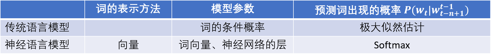
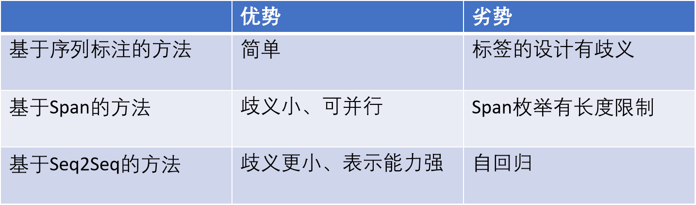

# 分词
为什么需要分词？
- 在自然语言处理领域，信息处理的最小单位一般是词
- 在中文里，词和词之间没有天然的分隔，比如空格，因此在进行其他任务之前，通常需要分词
# 分词算法
- 查词典法
- 最大匹配法
- 最大概率法
- 序列标注法
- N - 最短路径法
# 新词发现
为什么需要新词发现？
- 基于词典的分词方法对于没在词典的词（新词）没办法处理
- 新词也称为未登录词
- 人名、地名、机构名、品牌名、专业名词、缩略语、网络新词
新词发现的思路：
- 根据语料（文本数据）中词的一些特征，将语料中可能的词提取出来
- 再把所有提取出来的词和词典里的词进行比较
- 不在词典里的词就是新词
新词特征：频率、内部凝固度（互信息）、外部自由度（信息熵）
# 词向量
# 名词解释
分词：将句子、段落、文章这种长文本，分解为以字词为单位的数据结构，方便后续的处理分析工作
词向量：用来表示词的向量，也可被认为是词的特征向量或表征。词向量本质是将一些低维、离散、不带任何意义的序号映射成带有特定任务性质的高维特征。
# 语言模型
语言模型：计算一个词出现的概率，极大似然估计；计算一段文字出现的概率
n 元语法模型：一个词出现的概率只和它前面 n-1 个词相关
数据平滑的基本思想：调整概率值，使零概率增值，使非零概率下调，改进模型的整体性能（加 1 法，Good-Turing 平滑）
Good-Turing 平滑：将已经出现的词的概率进行打折，打折后分出一部分概率给没有出现的词
# 神经语言模型
独热向量：每个词对应一维；向量的总维数为词表大小
例如：Wuhan University is located in Hubei，则 University 的 one-hot 为：0 1 0 0 0 0 0
输入层：n-1 个词的词向量串接
隐层：y = f (Wx+b)
- x 输入向量
- W 参数矩阵
- b 偏置向量
- f 激励函数（sigmoid, tanh）
- y 输出向量
输出层：softmax

# Word2Vec
Word embedding: 把词表示成一个固定维数的向量
向量的每一维都是参数，是从大规模的文本中训练出来
- Word2Vec 的参数一个是 C，一个是 W，其中 C 就是词向量的查找表，其中每一行（或每一列）就是我们常说的词向量
- 模型训练好后，我们可以把 C 保存下来
- Word2Vec 的主要计算量在输出层
- 因为词表 | V | 很大，所以 softmax 的计算量很大
- Word2Vec 提出两种加快训练速度的方式，思想都是减少 softmax 计算
Word2Vec 和 Glove 均可以训练词向量
# 文本分类
# 文本分类任务介绍
任务定义：输入一个句子或一段文本，输出句子或者文本的类别（情感分类、关系分类）。
常用方法：
- 统计机器学习：支持向量机 SVM、最大熵模型
- 深度学习：卷积神经网络 CNN、循环神经网络 RNN
# 基于 CNN 的文本分类
卷积：用卷积核在序列上进行重复的类似的计算。
卷积目的：单个词表达的意义是有限的，让词和它的上下文互相感知，从而丰富词的语义
池化：将多个向量变成一个向量
基于 CNN 的文本分类总结：
- 利用卷积学习词和词的上下文特征
- 利用池化将一个变长的句子转化为一个定长的特征向量
- 特征向量用于输出层做文本分类
- softmax
TextCNN：定义了 6 个卷积核（4x5,3x5,2x5 各两个）
TextCNN 总结：
- CNN 可以有多个核，每个核的窗口大小不一样
- 便于捕捉 n 元特征（2 元，3 元，4 元，...）
- 多个核产生的特征，通过串接组合在一起，生成特征向量
- 特征向量用于输出层做文本分类
# 基于 CNN 的关系分类
# 关系分类的任务介绍
给定两个实体 (人名、地名、组织结构名等等)，判断两个实体之间的关系（分类），例如：小李出生在中国（出生在就是关系）
基于 CNN：
- 句子
- 词表示
- 卷积
- 池化
- 输出层
加入 Attention 机制后：
- 句子
- 词表示
- 注意力 Attention
- 卷积
- Attention
- 输出层
CNN 可以和其他神经网络，如前馈神经网络、循环神经网络、Attention 网络进行组合使用
分类模型的要素:
- 输入
- 隐层
- 输出层
- 损失函数
# 注意力机制
目的：学习每个词对于任务的贡献率
- 输入：一个向量序列
- “something” attention on 向量序列 ，计算 attention score
- 通过 softmax 归一化 attention score
Attention score 的用途：
- 可以用来衡量每个词的贡献
- 可以用来进行加权平均，得到特征
# 词性标注
# 任务介绍
词性标注，就是给每个词一个词性
HMM（隐马尔可夫模型）可用于词性标注：
- 训练数据
- 计算马尔可夫模型的参数
- 利用极大似然估计
- 预测一个句子中，每个词的词性
- Viterbi 算法（词性预测）
HMM 参数：
- 隐状态
- 观察值
- 转移概率
- 发射概率
# 实体识别
# 任务介绍
实体识别（NER）定义：识别出文本中实体（人名、机构名、地名、时间、日期等）
两个子任务：
- 实体边界识别
- 确定实体类别
方法：把实体识别看成序列标注任务，为句子中的每一个词打标签
基于 Bi-directional LSTM CRF 的实体识别：
- 词向量层
- 双向 LSTM 层
- CRF 层
# 循环神经网络
变体：LSTM、GRU
# LSTM
LSTM：全名为 Long Shoort Term 网络，是一种 RNN 特殊的类型，可以学习长期依赖信息。LSTM 通过刻意的设计来避免长期依赖问题。记住长期的信息在实践中是 LSTM 的默认行为，而非需要付出很大代价才能获得的能力。
LSTM 的核心概念在于细胞状态以及 “门” 结构。
细胞状态相当于信息传输的路径，让信息能在序列连中传递下去。理论上讲，细胞状态能够将序列处理过程中的相关信息一直传递下去。因此，即使是较早时间步长的信息也能携带到较后时间步长的细胞中来，这克服了短时记忆的影响。
信息的添加和移除我们通过 “门” 结构来实现，“门” 结构在训练过程中会去学习该保存或遗忘哪些信息。
遗忘门：决定应丢弃或保留哪些信息。来自前一个隐藏状态的信息和当前输入的信息同时传递到 sigmoid 函数中去，输出值介于 0 和 1 之间，越接近 0 意味着越应该丢弃，越接近 1 意味着越应该保留。
输入门：用于更新细胞状态。首先将前一层隐藏状态的信息和当前输入的信息传递到 sigmoid 函数中去。将值调整到 01 之间来决定要更新哪些信息。0 表示不重要，1 表示重要。其次还要将前一层隐藏状态的信息和当前输入的信息传递到 tanh 函数中去，创造一个新的侯选值向量。最后将 sigmoid 的输出值与 tanh 的输出值相乘，sigmoid 的输出值将决定 tanh 的输出值中哪些信息是重要且需要保留下来的。
细胞状态：更新旧细胞状态。我们把旧状态与遗忘门输出值相乘，丢弃掉我们确定需要丢弃的信息。接着加上输入门输出的值（sigmoid 的输出值与 tanh 的输出值相乘），这就是新的候选值，根据我们决定更新每个状态的程度进行变化。
输出门：用来确定下一个隐藏状态的值，隐藏状态包含了先前输入的信息。首先，我们将前一个隐藏状态和当前输入传递到 sigmoid 函数中，然后将新得到的细胞状态传递给 tanh 函数。最后将 tanh 的输出与 sigmoid 的输出相乘，以确定隐藏状态应携带的信息。再将隐藏状态作为当前细胞的输出，把新的细胞状态和新的隐藏状态传递到下一个时间步长中去。

LSTM 和 GRU 的比较:
- LSTM：输入门，输出门，遗忘门，cell state
- GRU：更新门，重置门，输出门
循环神经网络可用于特征抽取
# 条件随机场 CRF
输入：句子
输出：标签序列
总结：
- 利用神经网络进行文本特征抽取
- 不仅考虑标签本身，也考虑标签的转移得分（对比 softmax）
- CRF 可以选择更丰富的特征
# 不规则命名实体识别方法比较

# 句法分析
概率上下文无关句法 PCFG
# 依存分析
定义：基于依存文法的句法分析。分析结果为句子中词语间依存关系组成的依存树。
每个依存关系由一个中心词 (Head) 和一个依赖词 (Dependent) 组成
基于转换的 (transition-based) 依存句法分析：
- 将依存分析转化为操作序列生成的问题
- 训练模型
- 给一些训练数据（依存树库）
- 训练一个分类器，能够生成如下操作组成的序列
- Shift
- Left arc
- Right arc
- 预测时
- 输入：一个句子
- 输出：操作序列
- 解码：使用操作序列将句子转化为依存树
# 预训练
训练指为了某个特定任务，使用人工标注的数据，训练模型（比如实体识别）
预训练也是训练模型，不过是使用大规模无人工标注的数据，进行训练
- 标注是数据里自带的，也叫做自监督训练
- 可以看成无监督学习的一种
word2vec 中也用过预训练
与训练模型：ELMo、GPT、BERT
- BERT 本质上是一个基于 Transformer 的预训练语言模型，只有 Transformer 的 Encoder
- GPT 也一个基于 Transformer 的预训练语言模型，只有 Transformer 的 Decoder
- ELMo 是一个基于 LSTM 的语言模型，由 forward 和 backward LSTM 组成
# GPT 和 BERT 比较
GPT (Generative Pre-Training) 和 BERT (Bidirectional Encoder Representation from Transformers) 都是以 Transformer 为主题架构的预训练语言模型，都是通过 “预训练 + fine tuning” 的模式下完成下游任务的搭建
- GPT 是单向模型，无法利用上下文信息，只能利用上文；而 BERT 是双向模型
- GPT 是基于自回归模型，可以应用在 NLU 和 NLG 两大任务，而原生的 BERT 采用的基于自编码模型，只能完成 NLU 任务，无法直接应用在文本生成上面
- 同等参数规模下，BERT 的效果要好于 GPT
# 词汇处理
词义排岐：给定一个词及其上下文，如果其义项出现在训练集中，则确定其义项
词义学习：给定一个词及其上下文，如果其义项不在训练集中，则学习其新义项，并抽取上下文特征作为该义项的标记
# 结构分析
语言结构：一个语言单位的组成部分及其关系组成的结构体
语言单位：短语、句子、段落、篇章
组成部分：字、词、短语、句子、段落、篇章
句法关系：反映句子组成层面的关系，回答句子是否合法的问题
语义关系：反映组成部分深层的关系
句法和语义：句法关心一个语言单位是否满足语法，语义关心一个语言单位所表达的意义
句法结构：语言成分及其句法关系组成的结构
依存结构：词汇间的依存关系组成的结构
块结构：句法块及其句法关系组成的结构
结构预测模型：
- 基于转移的模型：有限自动机
- 基于图的模型：图空间
# 篇章分析
回指：语法描写中用来指一个语言单位从先前某个已表达的单位或意义（先行词）得出自身释义的过程或结果
零形回指（zero anaphora）是小句中有指称前文语段的意义，但没有借助语音或者词汇形式的回指现象
# 情感分析
情感分析定义：社交媒体针对特定对象的主观反应或自身的情绪状态，前者包括极性、立场、意见、态度等；后者包括情绪表达 / 诱因抽取和分类
社交媒体文本挖掘：
- 数据层：数据采集
- 资源层：知识图谱 标注数据
- 技术层：知识挖掘 情感分析
- 功能层：情报生成 预警预测
# 语义分析
语义结构：自然语言所描述的语义要素及其关系
# 实验
文本分类任务基本流程：
安装并导入相关的深度学习库、数据获取和预处理、定义神经网络、定义损失函数 (loss function) 和优化器 (optimizer)、训练网络和测试网络
一个常规的序列标注任务代码开发流程是：安装并导入相关的深度学习库、定义标签集合 (Label set)、数据获取和预处理、定义神经网络、定义损失函数 (loss function) 和优化器 (optimizer)、训练网络和测试网络。